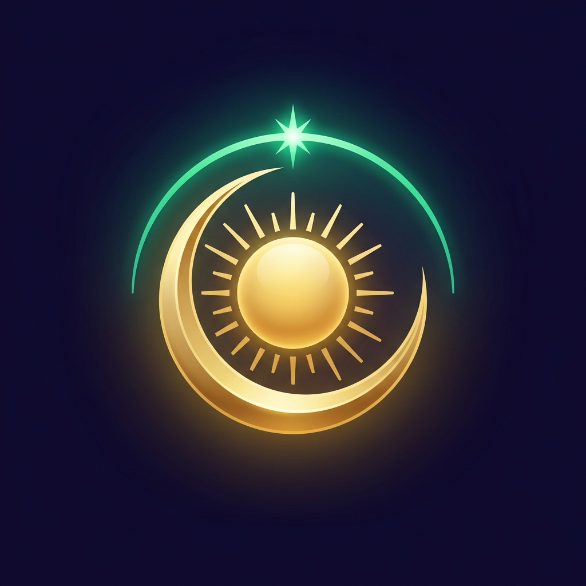

Feu Vert — Journée porteuse
Jours de Réussite, d’Ouverture, de Stabilité, de Commencement ou de Contrôle, sans opposition avec vos piliers de naissance. C’est le moment d’avancer : lancer un projet, signer un contrat, négocier ou célébrer une union.

Une journée porteuse pour l’un peut être en opposition frontale pour l’autre. À partir de votre date et de votre heure exactes de naissance (vos 4 Piliers BaZi), QiMétéo croise chaque matin l’Officier du Jour et le Qi Men Dun Jia pour vous indiquer la couleur de votre journée, vos deux créneaux favorables de deux heures et l’angle où orienter votre fauteuil.
Harmonie directe avec votre Pilier du Jour et de l’Heure : journée idéale pour lancer un projet, signer un contrat ou négocier.
Dans la tradition du Tong Shu, les jours favorables s’inscrivent en rouge et les jours de retenue en noir. QiMétéo croise les 12 Officiers du Jour avec vos quatre piliers de naissance (date et heure) pour vous donner un signal immédiat dès le matin.
Jours de Réussite, d’Ouverture, de Stabilité, de Commencement ou de Contrôle, sans opposition avec vos piliers de naissance. C’est le moment d’avancer : lancer un projet, signer un contrat, négocier ou célébrer une union.
Jours de Nettoyage, d’Équilibre, d’Accumulation ou de Moisson : propices pour trier, débuter un soin, clôturer un dossier ou encaisser, en plaçant vos appels décisifs dans vos deux créneaux Qi Men.
Jours de Destruction, de Péril, de Fermeture ou journée en opposition frontale avec votre pilier du Jour ou de l’Année : n’engagez aucune signature irréversible. Si une obligation s’impose, appuyez-vous uniquement sur les deux créneaux horaires du jour.
En métaphysique chinoise, se limiter à l’animal de l’année de naissance ignore les trois quarts de votre thème. QiMétéo calcule vos quatre piliers (BaZi) à partir de votre date et de votre heure de naissance pour évaluer la résonance exacte de chaque journée avec vous.
Détermine votre cercle extérieur, votre rapport au monde et votre Chiffre Ming Gua (1 à 9), qui fixe vos quatre directions favorables permanentes à la maison.
Calé sur les 24 périodes solaires (JieQi), il gouverne votre climat énergétique, votre activité professionnelle et la force saisonnière de vos éléments.
Votre identité profonde et votre conjoint. Un Clash frontal entre le jour courant et votre Pilier du Jour déclenche immédiatement une alerte de prudence personnalisée.
Lié à vos projets, vos créations et l’aboutissement de vos actions. Il affine le score quotidien et révèle les harmonies subtiles heure par heure.
Chaque écran de QiMétéo répond à une question pratique : quel jour choisir, à quelle heure agir, de quel côté orienter son fauteuil et comment disposer son lieu de vie.
Chaque jour entre 07h et minuit, QiMétéo écarte systématiquement toute fenêtre comportant une structure défavorable pour ne retenir que les deux meilleurs créneaux de deux heures (Combinaisons 5★ en rouge, Accomplir des vœux, Succès Financiers, Succès Relationnels et Déités majeures).
Selon la nature du créneau, l’application précise s’il convient de tourner le dos à la Déité (Chief, Heaven, Earth, Moon, Harmony) ou de faire face à une Combinaison, avec une boussole calée au degré près sur les huit secteurs cardinaux.
Filtrez les meilleures dates à venir selon votre objectif : Lancer un projet ou commerce, Signer un contrat et encaisser, Mariage et union, Immobilier et travaux, Voyage, Médecin et chirurgie (hors jours d’Accumulation et de Moisson) ou Tri et régime.
À partir de votre naissance, QiMétéo détermine votre Chiffre Gua (1 à 9, groupe Est ou Ouest) et indique vos quatre orientations personnelles : vers quel mur pointer la tête de votre lit (Tian Yi, santé), dans quel axe installer votre bureau (Sheng Qi, vitalité) et quels secteurs éviter.
QiMétéo relit les événements déjà inscrits dans votre agenda iPhone : lorsqu’une réunion ou une signature tombe un jour de Destruction, de Fermeture ou d’opposition personnelle, elle le signale et propose une fenêtre plus porteuse.
Le mode Simple va droit au conseil pratique sans jargon. Un basculement dans les réglages active le mode Expert complet : 4 Piliers BaZi, Troncs Célestes, Branches Terrestres, 12 Officiers, Portes, Étoiles et Déités Qi Men.
Au-delà du rythme quotidien, QiMétéo étudie vos directions permanentes à la maison et compare deux thèmes complets (dates et heures de naissance) pour identifier les jours où vos énergies s’accordent sans friction.
Comparez vos piliers avec ceux d’un conjoint, d’un associé ou d’un proche pour repérer vos alliances naturelles (San He, Liu He) et choisir un jour favorable aux deux.
Dormir la tête tournée vers sa direction Tian Yi soutient la récupération nocturne, tandis qu’orienter son bureau vers Sheng Qi favorise la clarté d’esprit et l’élan professionnel.
Au lancement sur l’App Store, le bulletin d’aujourd’hui, ses deux créneaux stratégiques de deux heures et la boussole du jour seront gratuits sans limite de durée. L’édition PRO débloquera le planificateur sur 45 jours, les sept intentions de projet, le Feng Shui Ming Gua et le mode Duo.
Tout le nécessaire pour consulter la qualité d’aujourd’hui et ses deux créneaux horaires.
Partage Familial Apple inclus pour jusqu’à six membres de votre foyer.
Pour accompagner un lancement de projet, une signature ou un déménagement en toute liberté.
Votre date et votre heure de naissance, votre Chiffre Gua, les profils de vos proches et votre journal demeurent exclusivement sur votre iPhone ou votre iPad. Aucune donnée personnelle n’est transmise à des serveurs publicitaires.
En métaphysique chinoise (BaZi et Tong Shu), l’année de naissance ne représente qu’un seul pilier sur quatre. Votre jour de naissance détermine votre Maître du Jour (le pilier le plus sensible aux oppositions quotidiennes) et votre heure de naissance affine vos affinités énergétiques pour vos projets. Si vous ne connaissez pas votre heure de naissance, QiMétéo fonctionne également sur vos trois premiers piliers.
Vous accéderez gratuitement chaque jour à la météo complète d’aujourd’hui (couleur du jour, Officier, pilier et affinités avec votre thème natal) ainsi qu’aux deux meilleurs créneaux stratégiques de deux heures de la journée et à la boussole. L’abonnement QiMétéo PRO débloquera les prochaines dates de projet sur 45 jours, l’ensemble des créneaux positifs du jour, le profil Feng Shui Ming Gua (maison, lit, bureau) et la synergie Duo.
Les deux outils agissent à des échelles différentes. La boussole Qi Men Dun Jia est temporelle : elle indique dans quelle direction orienter votre chaise pendant un créneau de deux heures pour un appel, une signature ou une négociation. Le Feng Shui Ming Gua est permanent : calculé dans l’onglet Profil selon votre naissance, il indique les quatre directions favorables de votre logement, notamment l’orientation de la tête de lit et du bureau.
Oui. Les formules QiMétéo PRO (mensuelle et annuelle) incluent nativement le Partage Familial Apple : jusqu’à six membres de votre groupe familial bénéficient de l’intégralité des fonctions PRO sur leur propre iPhone ou iPad sans supplément.
QiMétéo arrive très prochainement sur l’App Store pour iPhone et iPad.